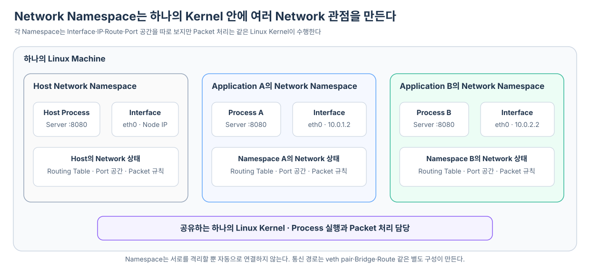
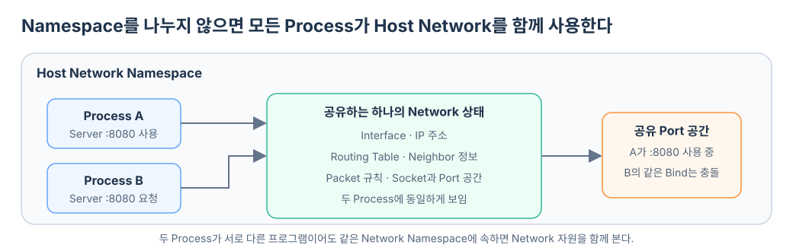

하나의 Linux Machine에서 여러 Application을 실행하면 모든 Process는 기본적으로 같은 Network 환경을 본다. 같은 Network Interface와 IP 주소를 사용하고, 같은 Routing Table을 따라 Packet을 보내며, 같은 Port 공간에서 Server Socket을 연다.
Application이 몇 개 없을 때는 단순하지만, 서로 독립적으로 운영해야 하는 Application이 많아지면 문제가 생긴다. 두 Application이 모두 8080 Port를 사용하려 할 수 있고, 한 Application을 위해 바꾼 Route나 Firewall 규칙이 다른 Application에도 영향을 줄 수 있다.
Network Namespace는 하나의 Linux Kernel 안에서 Process마다 서로 다른 Network 환경을 보게 만들어 이 문제를 해결한다.

Namespace가 없다면 모든 Process가 같은 Network를 본다
Linux에서 실행되는 Process들은 기본적으로 Host의 Network Namespace에 속한다. 그래서 두 Process가 ip addr를 실행하면 같은 Interface 목록을 보고, ip route를 실행하면 같은 Routing Table을 본다.

이 상태에서 Process A가 0.0.0.0:8080을 사용해 Server Socket을 열었다면 Process B는 같은 주소와 Port 조합을 다시 사용할 수 없다. 둘이 같은 Network 공간을 공유하기 때문이다.
Network Namespace는 별도의 Network 관점을 만든다
Linux Namespace는 하나의 Kernel 자원을 Process별로 다르게 보이게 하는 격리 기능이다. 그중 Network Namespace는 Network와 관련된 자원을 분리한다.
각 Network Namespace는 다음과 같은 자신만의 Network 상태를 가질 수 있다.
| 분리되는 대상 | Namespace마다 달라질 수 있는 것 |
|---|---|
| Network Interface | eth0, lo, 가상 Interface 목록 |
| IP 주소 | 각 Interface에 설정된 IPv4·IPv6 주소 |
| Routing Table | 목적지에 따라 어느 Interface와 Gateway를 사용할지 |
| Neighbor 정보 | ARP나 IPv6 Neighbor Discovery로 알아낸 이웃 |
| Port와 Socket 공간 | 어느 Process가 어떤 주소와 Port를 사용 중인지 |
| Network 규칙 | iptables·nftables 같은 Packet 처리 규칙 |
따라서 Namespace A의 Process와 Namespace B의 Process가 각각 0.0.0.0:8080을 사용할 수 있다. 서로 다른 Port 공간에 Socket을 열기 때문에 충돌하지 않는다.
Namespace A의 0.0.0.0:8080
Namespace B의 0.0.0.0:8080
→ 서로 다른 Network 공간이므로 함께 존재 가능
격리돼 보여도 Linux Kernel은 하나다
Network Namespace를 가상 Machine과 혼동하면 안 된다. 가상 Machine은 Guest OS와 Kernel을 따로 실행할 수 있지만, Network Namespace에 속한 Process는 여전히 Host의 Linux Kernel을 사용한다.
하나의 Linux Kernel
├─ Host Network Namespace
├─ Application A의 Network Namespace
└─ Application B의 Network Namespace
Kernel은 Packet을 처리할 때 현재 Process 또는 Packet이 속한 Namespace의 Interface, Route와 Network 규칙을 사용한다. 그래서 Process 입장에서는 자기만의 Network Stack이 있는 것처럼 보이지만, 실제 Packet 처리는 같은 Kernel 코드가 수행한다.
Process는 자신이 속한 Namespace의 Network만 본다
Network Namespace는 Application 자체가 아니라 Linux Process와 연결된다. Process가 Socket을 만들고 Packet을 보낼 때 Kernel은 그 Process가 속한 Network Namespace를 기준으로 Network 상태를 찾는다.
예를 들어 같은 Machine에서 실행되는 두 Process가 서로 다른 Namespace에 속할 수 있다.
Process A
→ Namespace A의 eth0·IP·Route 사용
Process B
→ Namespace B의 eth0·IP·Route 사용
Process A 안에서 ip addr를 실행하면 Namespace A의 Interface만 보인다. Host에서 같은 명령을 실행하면 Host Network Namespace의 Interface가 보인다. 같은 Kernel에 명령을 요청하더라도 어떤 Namespace에서 실행했는지에 따라 결과가 달라진다.
새 Namespace는 처음부터 외부와 연결돼 있지 않다
Network Namespace를 만들었다고 해서 자동으로 Internet이나 Host Network에 연결되는 것은 아니다. 새 Namespace에는 독립된 Loopback Interface가 있지만, 사용 가능한 외부 Interface와 Route를 별도로 준비하지 않으면 다른 Network로 Packet을 보낼 수 없다.
Network Namespace 생성
→ Network 환경 격리
→ 외부 연결은 아직 없음
연결이 필요하면 가상 Interface를 Namespace에 넣고 IP와 Route를 설정해야 한다. 두 Namespace를 연결할 때 흔히 사용하는 장치가 veth pair다. 한쪽 끝을 각 Namespace에 두면 한쪽으로 들어간 Packet이 반대쪽에서 나오므로 가상 Network Cable처럼 동작한다.
Network Namespace는 격리를 제공하고, veth pair·Bridge·Route 같은 구성은 격리된 Network 사이에 통신 경로를 만든다. 두 역할은 구분해야 한다.
Container는 Namespace에 들어간 Linux Process다
Container도 별도의 Kernel을 가진 작은 Machine이 아니다. 여러 Linux 격리 기능을 적용받으며 실행되는 Process다. Network 측면에서는 Container Process를 특정 Network Namespace에 넣어 Host와 다른 Interface, IP, Route와 Port 공간을 보게 한다.
Container Process
→ 지정된 Network Namespace에 들어감
→ 그 Namespace의 Interface·IP·Route만 사용
그래서 Container 안에서 보이는 eth0은 Host의 물리 eth0과 같은 Interface가 아니다. Container의 Network Namespace에 배치된 가상 Interface일 수 있다.
Kubernetes에서는 Container가 아니라 Pod가 Network 경계다
Kubernetes에서 하나의 Pod 안에 있는 Container들은 같은 Network Namespace를 공유한다. 따라서 같은 Pod의 Container들은 하나의 Pod IP를 사용하며 localhost로 서로 통신할 수 있다.
Pod A의 Network Namespace
├─ Container 1
├─ Container 2
├─ 공통 eth0
├─ 공통 Pod IP
└─ 공통 Port 공간
같은 Pod의 Container 1이 8080 Port를 사용하고 있다면 Container 2가 같은 주소의 8080 Port를 다시 사용할 수 없다. Container가 달라도 Network Namespace와 Port 공간은 같기 때문이다.
반대로 Pod A와 Pod B는 서로 다른 Network Namespace를 사용한다. 각 Pod는 자신의 Interface, Pod IP와 Routing Table을 보며 같은 Container Port 번호를 독립적으로 사용할 수 있다.
Pod가 만들어질 때 Container Runtime은 Pod가 공유할 Network Namespace를 준비하고, CNI Plugin은 그 Namespace에 Interface, IP와 Route를 구성한다. 이후 Pod의 Application이 Packet을 보내면 같은 Node의 Linux Kernel이 Pod의 Network Namespace 설정을 사용해 첫 경로를 판단한다.
다음 질문은 격리된 Pod Network를 어떻게 연결하는가다
Network Namespace를 이해하면 Pod마다 eth0, IP와 Routing Table이 따로 보이는 이유가 설명된다. 하지만 Namespace는 분리만 제공하므로, 이 상태만으로 Pod와 Host 또는 다른 Pod가 통신할 수는 없다.
다음 단계에서는 다음 연결을 살펴봐야 한다.
두 Network Namespace 사이에 veth pair를 만들고 한쪽 Interface를 옮기는 과정, Packet이 한쪽의 송신에서 반대쪽의 수신으로 바뀌는 방식과 그 뒤에 필요한 Route·Bridge의 책임은 격리된 Network Namespace는 veth pair로 어떻게 연결될까?에서 이어서 살펴본다.
Pod의 Network Namespace
→ Pod 쪽 veth 끝점인 eth0에서 TX
→ Peer인 Host 쪽 veth 끝점에서 RX
→ Host Network Namespace의 처리
이 연결을 이해하면 Pod에서 내보낸 Packet이 어떻게 Node 쪽 Interface로 나타나고, 이후 iptables의 Service 규칙을 만나는지 이어서 볼 수 있다.